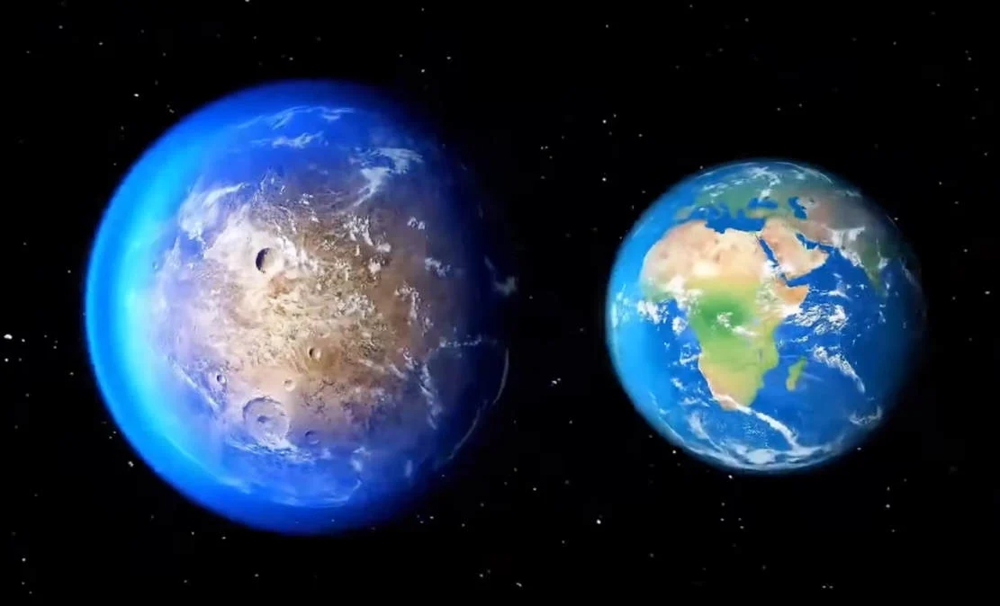

Gas Giant

Gas giants are planets the size of Saturn or Jupiter, the largest planet in our solar system, or much, much larger. More variety is hidden within these broad categories. Hot Jupiters, for instance, were among the first planet types found – gas giants orbiting so closely to their stars that their temperatures soar into the thousands of degrees (Fahrenheit or Celsius)
Neptunian

Neptunian planets are similar in size to Neptune or Uranus in our solar system. They likely have a mixture of interior compositions, but all will have hydrogen and helium-dominated outer atmospheres and rocky cores. We’re also discovering mini-Neptunes, planets smaller than Neptune and bigger than Earth. No planets of this size or type exist in our solar system.
Super-Earth
Super-Earths are typically terrestrial planets that may or may not have atmospheres. They are more massive than Earth, but lighter than Neptune.
Terrestrial

Terrestrial planets are Earth sized and smaller, composed of rock, silicate, water or carbon. Further investigation will determine whether some of them possess atmospheres, oceans or other signs of habitability.